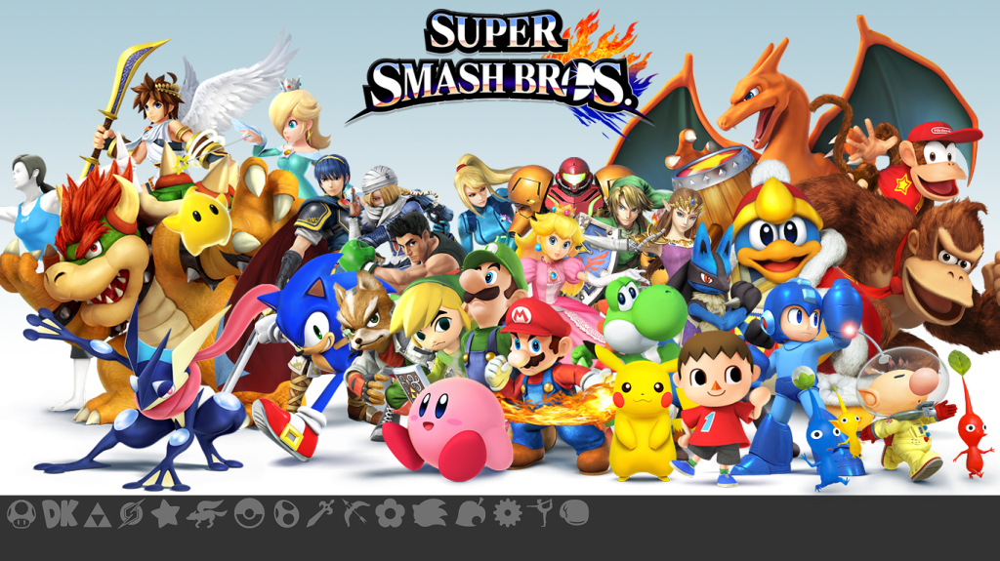

Super Smash Brothers
Super Smash Bros. for Nintendo 3DS and Super Smash Bros. for Wii U are fighting video games developed by Sora Ltd. and Bandai Namco Games and published by Nintendo for the Nintendo 3DS and Wii U video game consoles.
Super Smash Bros. for Nintendo 3DS and Super Smash Bros. for Wii U are fighting video games developed by Sora Ltd. and Bandai Namco Games and published by Nintendo for the Nintendo 3DS and Wii U video game consoles.
Super Mario 64 is a 1996 platform video game developed and published by Nintendo for the Nintendo 64. It is the first Super Mario game to use three-dimensional graphics. Along with Pilotwings 64, it was one of the launch games for the console.
Hearthstone, originally known as Hearthstone: Heroes of Warcraft, is a free-to-play online collectible card video game developed and published by Blizzard Entertainment.

Overwatch is a team-based multiplayer first-person shooter video game developed and published by Blizzard Entertainment. It was released on May 24, 2016 for PlayStation 4, Xbox One, and Windows.
The Legend of Zelda: Breath of the Wild is an action-adventure game developed and published by Nintendo. A part of The Legend of Zelda series, it was released for the Nintendo Switch and Wii U consoles on March 3, 2017.